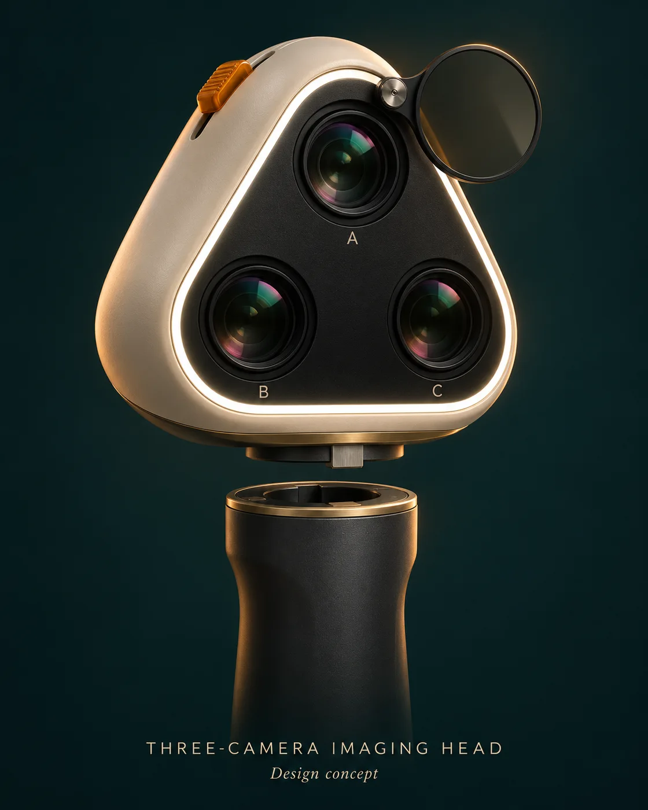

01 / INTENDED
What we intended
Study geometric agreement between three views, landmark identity across views and explicit verification labels for interpreting observations.
A goal is not an experimental result.
Third-Look · Agreement between cameras must be measured.
What we intended. What actually happened. What else this might be useful for. A design review or paper calculation is not a physical experiment.
Study geometric agreement between three views, landmark identity across views and explicit verification labels for interpreting observations.
A goal is not an experimental result.
The public repository currently offers a project overview, but no runnable implementation, released data, reproducible study or hardware validation. More camera views alone do not establish localization accuracy, wound measurement or diagnostic reliability.
This describes the available source record; no new tests are implied.
A disciplined multi-view disagreement test could also serve nonmedical surface or infrastructure inspection, where an uncertain image should prompt a new measurement. That use is hypothetical.
New hypothesis only; independent validation needed.
Publish a narrow study question and reference geometry.
Define occlusion, glare, misregistration and unknown-state labels.
Benchmark against independent measurements before making accuracy or medical claims.
| Project / version | Third-Look · Three-camera concept · release version not specified |
|---|---|
| Record date | 20 November 2026 · the publication date, not an experiment date |
| Current classification | Overview only · no published tests |
| Source basis | Public repository overview only; attached videos and unreleased design materials are not treated as experimental evidence. |
| Limitations | No validated wound imaging, diagnosis or clinical capability. |
| Outcome | No new experiment or independent replication was performed for this Divergence Ledger publication. |
An archive digest is not the same as a public source file. Private source documents are not represented as verified public downloads.
A divergence record is useful whether its current evidence is a concept, a model, a correction or a measured experiment. Only supported claims belong in the observed column.
All recordsPrevious recordNext record